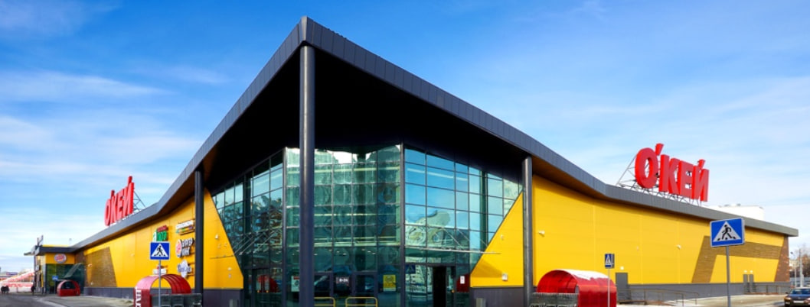
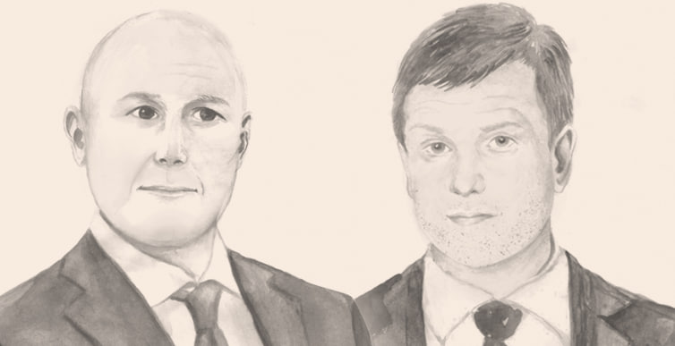
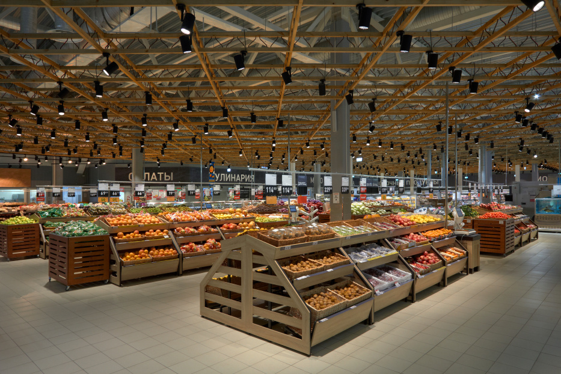

О компании
O'KEY Group" - одна из крупнейших российских розничных сетей, которая специализируется на торговле продуктами питания.

Первый гипермаркет O'KEY Group был открыт в 2002 году и с тех пор компания демонстрирует уверенный рост. Сегодня магазины сети представлены во многих крупных городах России.
Мы гордимся нашими достижениями и постоянным стремлением к совершенству. Почему стоит выбрать нас:
- Гибкая бизнес-модель, в основе которой – два конкурентоспособных формата магазинов, а также платформа электронной коммерции, что позволяет удовлетворить все потребности группы покупателей
- Передовые ИТ-решенияи прогрессивная инфраструктура
- Уникальная экспертизав работе с собственными торговыми марками и собственным производством, что позволяет сформировать привлекательноеценностное предложение для покупателей
История компании
Два выпускника морского технического университета создали сеть гипермаркетов "О'Кей" Дмитрий Коржев и Дмитрий Троицкий. Тринадцать лет назад два выпускника петербургского морского технического университета Дмитрий Коржев и Дмитрий Троицкий, видимо, поняли, что выгоднее торговать "жигулями", чем управлять кораблями, и создали фирму "Мега–авто", которая стала продавать в Петербурге автомобили Волжского автозавода.
Заработав на машинах первый капитал, друзья в 1995 году открыли в одном из бывших цехов оборонного завода "Ленинец" производственную линию соков "Мултон". Вскоре производство расширилось, и новый завод стал одним из крупнейших в России производителей соков (бренд Nico).
Обороты компании росли в геометрической прогрессии: если в 2001 году они составляли 1,65 млрд рублей, то уже в 2002 году превысили 5,7 млрд. А к 2005 году, когда партнеры продали предприятие концерну Coca–Cola за $500 млн, оборот превышал 11 млрд рублей.

Между тем еще в 2001 году друзья в партнерстве с Борисом Волчеком (№ 22 в рейтинге "ДП"), владельцем сети автосервисов "Юнион", и эстонским бизнесменом Хиларом Тедером создали ООО "СПб О’кейбол", которое в 2002 году открыло в Петербурге свой первый гипермаркет "О’Кей".
К 2004 году у компании были четыре гипермаркета и собственная кулинария.
Наши ценности и миссия
Мы верим в важность доверия, прозрачности и ответственности перед нашими клиентами. Поэтому стараемся предоставлять максимально качественные услуги, позволяющие клиентам брать лучшее за справедливую цену.

Основные ценности O'KEY Group включают:
- Индивидуальный подход - понимание и удовлетворение уникальных потребностей каждого клиента.
- Инновации - постоянное улучшение услуг и продуктов через внедрение новейших технологий.
- Профессионализм - высокий уровень знаний и компетенций наших сотрудников.
- Ответственность - этичное ведение бизнеса и забота о благополучии общества.
Мы стремимся быть надежным партнером для наших клиентов.